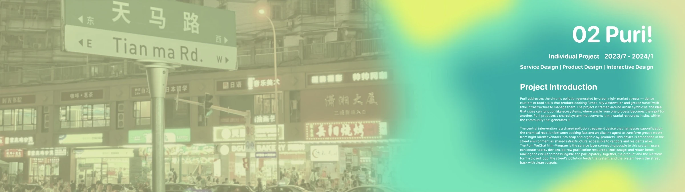
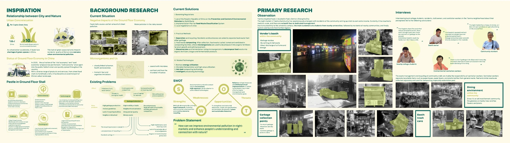
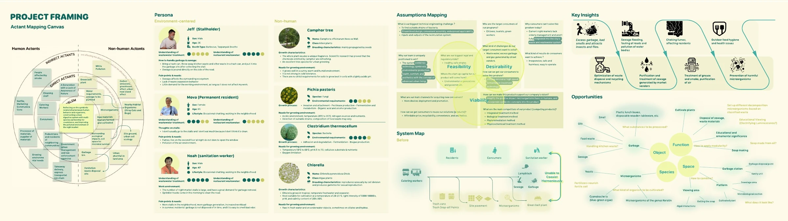
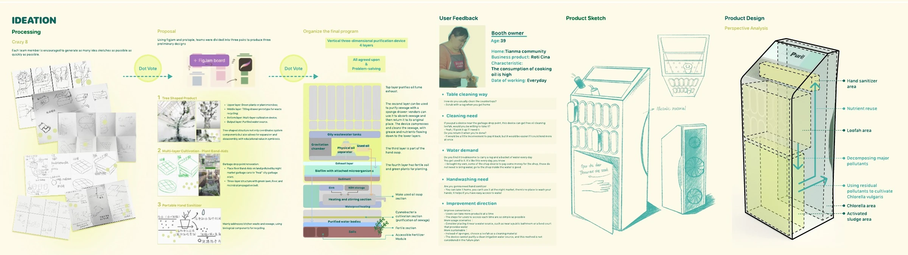
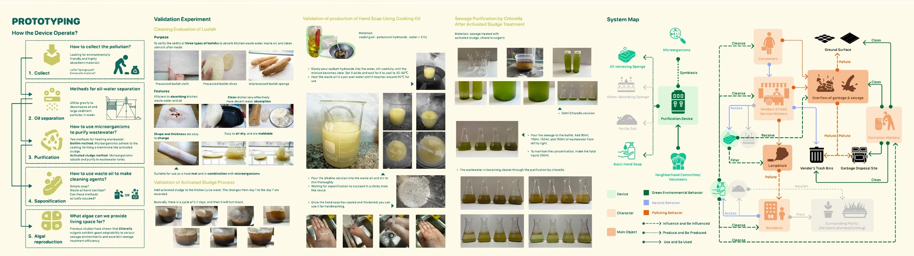
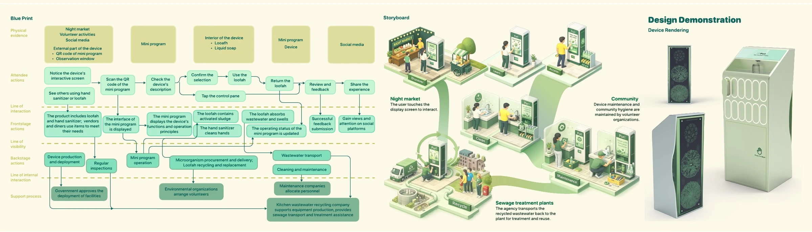
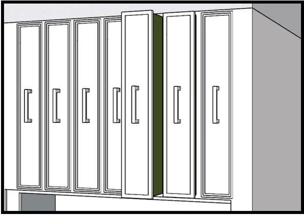
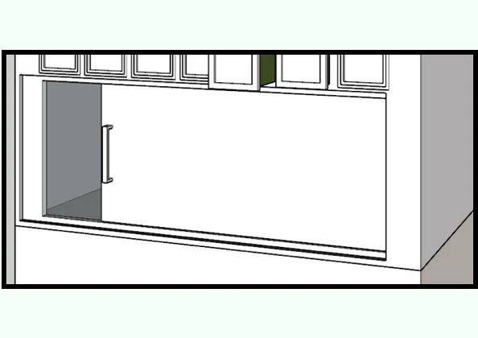

Case Study
Turning night-market grease into a shared resource.
Puri! combines service design, product design, and a WeChat Mini Program for street-scale pollution treatment.

Research Context
The street economy has a hidden residue.
Urban night markets generate cooking fumes, oily wastewater, and grease runoff with little infrastructure for shared treatment.
The research reframes pollution as a local material stream instead of an invisible disposal problem.

User Journey
A service loop across vendors, residents, and devices.
The system maps how pollution is generated, collected, treated, borrowed from, and returned to the community.
This step turns scattered actors into a coordinated circular flow.

Service Mechanism
Making chemical treatment legible.
Saponification becomes a public-facing interaction: users can understand what is happening, not only see a machine.
The product language balances street infrastructure with a softer domestic cleaning ritual.

Product System
Pollutant in, clean outputs out.
Experiments, material tests, and product flows define how grease waste becomes soap and other usable by-products.
The device is not a black box; it is a visible node in a neighborhood service.

Design Demonstration
A modular device for street-side circularity.
The final product demonstration shows the shared station, resource modules, and service evidence before the Mini Program takes over.
The next section extracts that service logic into the UI design presentation.
UI Demo
UI Demo.
The Mini Program connects the street-side purifier to everyday action: users choose an eco-resource, open the matching station module, and leave a return record for the community loop.
Resource inventory · Locker pickup · Return records
 Oil fume module asset
Oil fume module asset
Greywater module asset
Hand soap module assetA compact flow from borrowing to accountability